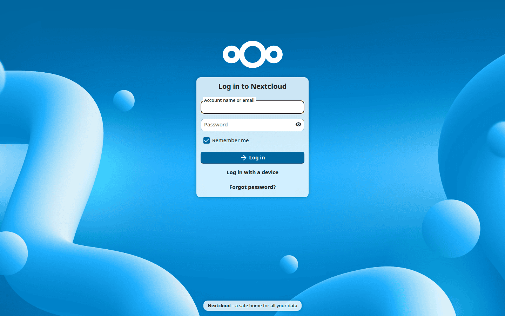
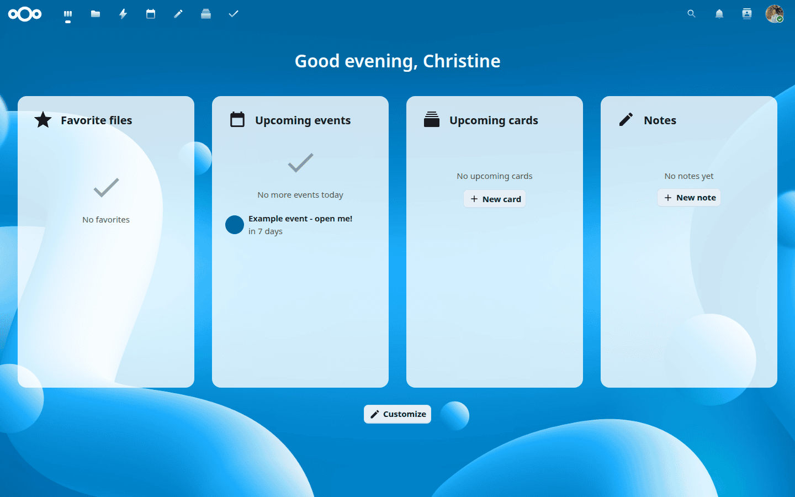
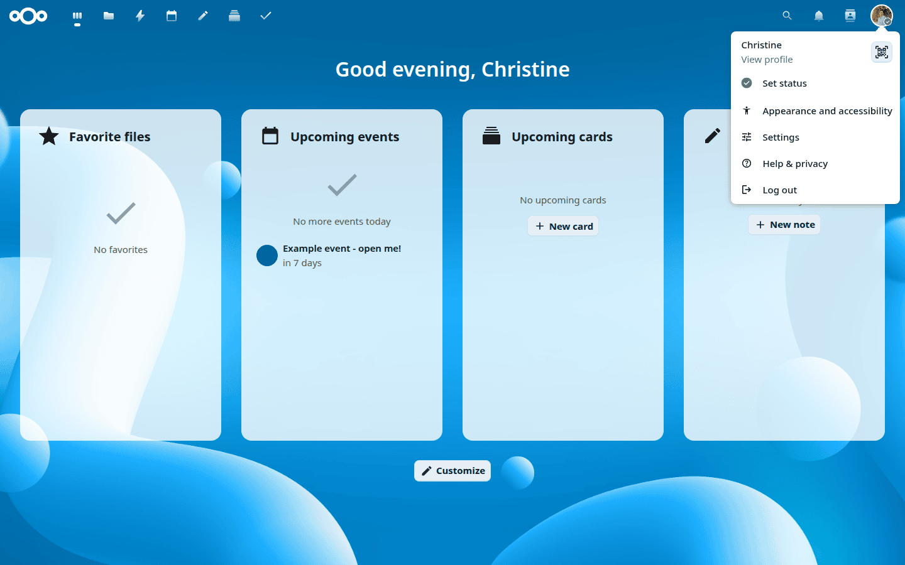
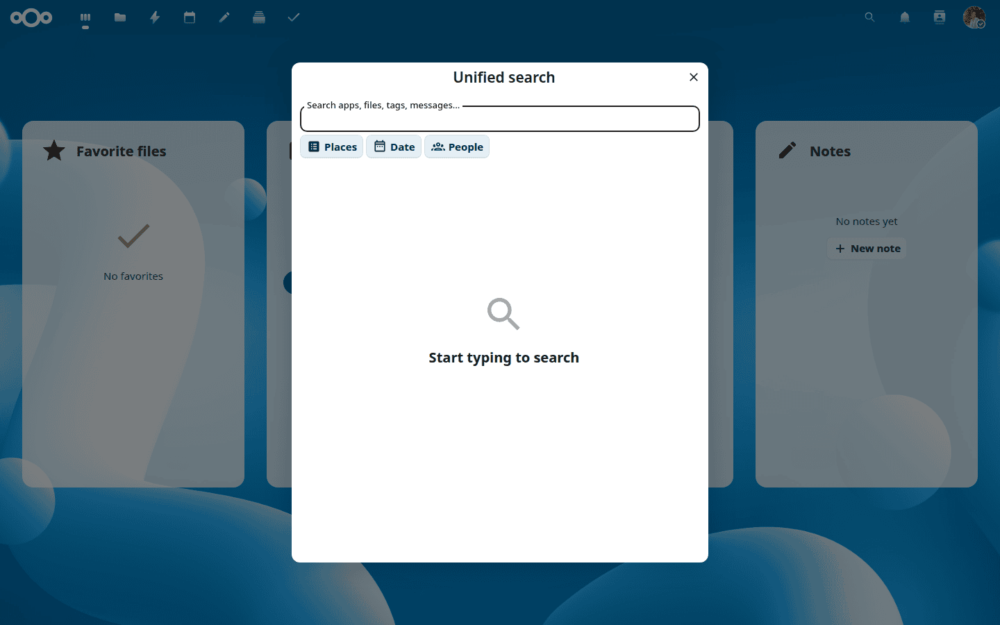

Comhéadan gréasáin Nextcloud
Oscail URL do fhreastalaí Nextcloud in aon bhrabhsálaí gréasáin agus logáil isteach le hainm do chuntais (nó do sheoladh ríomhphoist) agus do phasfhocal:

Is féidir leat logáil isteach freisin trí úsáid a bhaint as eochair phas nó eochair shlándála crua-earraí, trí chliceáil ar Logáil isteach le gléas.
Riachtanais bhrabhsálaí gréasáin
Chun an taithí is fearr a fháil, bain úsáid as an leagan is déanaí de cheann de na brabhsálaithe seo:
Google Chrome / Chromium
Mozilla Firefox
Apple Safari
Microsoft Edge
Note
Ní thacaítear le gach leagan. Díríonn Nextcloud ar bhrabhsálaithe a shásaíonn an tairseach íosta úsáide <https://browserslist.dev/?q=PjAuMjUlLCBub3Qgb3BfbWluaSBhbGwsIG5vdCBkZWFkLCBGaXJlZm94IEVTUg==>`_.
An Deais
Tar éis logáil isteach, osclaíonn Nextcloud an Painéal — forbhreathnú inoiriúnaithe ar an ngníomhaíocht is tábhachtaí atá agat: imeachtaí féilire atá le teacht, teachtaireachtaí nár léadh, comhaid le déanaí, agus tuilleadh.

Úsáid an cnaipe Saincheap ag bun an leathanaigh chun giuirléidí a chur leis, a bhaint, nó a athshocrú, de réir mar a oireann do do shreabhadh oibre.
Socruithe agus próifíl
Cliceáil ar do phictiúr próifíle chun roghanna do chuntais a rochtain:

Ón roghchlár seo is féidir leat:
Féach ar do phróifíl agus cuir in eagar í
Socraigh do stádas ar líne
Athraigh socruithe cuma agus inrochtaineachta
Oscail do leathanach pearsanta Socruithe
Rochtain ar chabhair agus faisnéis phríobháideachais
Logáil amach
Cuardach aontaithe
Cliceáil ar an deilbhín cuardaigh sa bharra nascleanúna (nó brúigh Ctrl+F) chun an fhuinneog chuardaigh a oscailt:

Déanann an cuardach aontaithe cuardach ar fud na n-aipeanna go léir atá suiteáilte agat — comhaid, imeachtaí féilire, teachtaireachtaí, teagmhálaithe, agus eile — ar fad ag an am céanna. Déantar torthaí a ghrúpáil de réir aipe, ionas gur féidir leat a fheiceáil go tapa cá bhfuarthas an toradh comhoiriúnach.
Úsáid na cnaipí scagaire chun torthaí a chúngú:
Áiteanna — teorannaigh an cuardach d’aip ar leith, ar nós Comhaid nó Féilire.
Dáta — scag de réir tréimhse ama (inniu, na 7 lá anuas, na 30 lá anuas, i mbliana, nó raon saincheaptha).
Daoine — ná taispeáin ach torthaí a bhaineann le duine ar leith.